- 00000018WIA30074E20GYZ
- id_131057914.27
- Apr 29, 2023 3:54:31 PM
Quadrature calibration troubleshooting
The signals for both channels originate from the exciter and are sent to the dual drive RF amplifier, where they are amplified to a maximum of 15 kW per channel for body coil mode only. The RF output riding on the T/R pulse is sent to the dual transmit receive switch (DTRSW) and then to the RF body coil. Because there are two RF signals, this redundancy can be used to troubleshoot the RF output.
For more information, see:
- For information on how dual drive works, see Dual Drive Theory.
- For information on dynamic disable and T/R pulse errors, see T/R and DD Troubleshooting .
| Warning | |
|---|---|
| Warning | |
|---|---|
Dual drive quadrature calibration failure information
Generic error message
The Dual Drive Quadrature Calibration tool generates the following message when it detects an error that prevents it from executing.
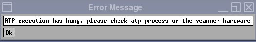
Because the tool reports this generic error message for a variety of reasons, it is important to check the error log when this error message is displayed. Three conditions that can generate this error message are Scan Door Open, No Signal, or Low Signal.
If the Dual Drive Quadrature Calibration tool found a Low Signal condition, the tool generates the following error message in the error log.

The above faults may not be associated with the Dual Drive Quadrature Calibration tool. For example, a poorly calibrated RF amplifier could cause a low signal condition.
Viewing log file
The Dual Drive Quadrature Calibration tool generates a log file. However, there is no GUI viewer for it. To view calibration log files, open a C Shell and type:
>cd /usr/g/service/log/systools/
An example log file is below:
Iteration 1
Checking landmark location.
Land mark location from home position 1.100100e+03 mm
Setting up combined image scan... Please wait
TG Window = 53
Channel 1 and Channel 2 set to ON
Auto prescan successful...
Phantom offsets (mm) X:L 8, Y:A 24, Z=I -1
Completed scanning for combined image
Last exam: 53651
Extracting image 1 in Exam 53651 complete
Combined image SNR 136.41, Uniformity 87.26
Combined image SNR 136.41 lesser then required SNR 160.00
Compensation PASS
Difference PASS
The log file provides errors for particular issues. For example:
Combined image SNR 136.41 lesser then required SNR 160.00
indicates that test failed due to low SNR.
Compensation PASS
indicates if channel to channel attenuation passed or failed.
Difference PASS
indicates if channel to channel phase difference passed or failed.
Dual drive quadrature calibration failures due to magnitude: low Signal on one channel
Swapping the RF transmit or receive cables does not cause hardware damage, but it does create a situation known as reverse quadrature. When this occurs, the combined image has a low signal. To determine if this is the problem, generate the three images using the Dual Drive Quadrature Calibration tool.
The illustration below shows the results of a system that has proper quadrature and the proper signal strength from both channel 1 and channel 2.

Values are approximate and may vary if system gain was not previously executed. The ratio between the combined scan and the single channel scan is approximately 1.41 : 1. If the value for the combined image is 1400, the value for the single channel scans should be approximately 1000.
| Tools and test equipment | ||
|---|---|---|
| Item | Quantity | Part Number |
| Body TLT sphere phantom (pink solution) | 1 | 2360025 |
| Body TLT short loader | 1 | 2360037 |
- Place the body TLT sphere and loader on the table. If you are using a flat (GEM) table, use the foam holder to contain the phantom.
- Landmark the phantom and drive it into the magnet bore.
- Click New Patient to set up for a scan.
- Under Protocol, select Service. Then select DDquadrature.
Figure 3. Protocol selector screen 
-
Set up and scan the combined image. DO NOT perform Auto Prescan. Do Manual Prescan and set the values to:
- TG = 150
- R1 = 11
- R2 = 14
- After scanning the combined image, removed the RF input cable from RF amplifier channel 2 by disconnecting J21. Leave channel 1 (J14) connected. Repeat the same scan WITHOUT changing any of the values for TG, R1, or R2. This linear scan uses only channel 1.
- When the image for channel 1 is complete, reconnect J21 (channel 2 input) and disconnect J14 (channel 1 input). Repeat the same scan WITHOUT changing any of the values for TG, R1, or R2. This linear scan uses only channel 2.
- Now there are three images. Review them. Figure 2 shows the results for a system that has proper quadrature and the proper signal strength from both channel 1 and channel 2. Use Table 1 to troubleshoot your images.
Table 1. Troubleshooting scan images Scan result Problem Resolution If the combined image has a weaker signal than either image from the single channels: The system could be transmitting in reverse quadrature. Somewhere in the RF transmit chain, the channel 1 and channel 2 cables are swapped. Locate the swapped cables and connect them correctly. Cables between DTRSW and the body coil must always be in the correct locations, or the body receive signal will be poor. Swapping channel 1 and channel 2 cables somewhere else in the transmit chain will not restore the body receive signal quality to normal.
If the signal for one of the channel images is lower than the other channel: There could be low or no RF signal from one of the channels. Check the RF output using: - RF Amp Power Check tool
or
- Power Measurement Kit (see Body and Head Maximum Power Setup and Calibration).
- RF Amp Power Check tool
Phase troubleshooting
This section is designed to help the FE locate the largest contributor of phase shift in the transmit chain. This is done by swapping cables and hardware between the DTX1 exciter and the RF body coil, and checking for the largest change in phase after every swap. A change in polarity after a cable swap indicates that you have reached one of the cables contributing a majority of the phase shift. Ideally, each channel 1 and 2 transmit chain section should contribute almost no phase shift. In a normal system, swapping channel 1 and 2 cables in any location results in almost no change in phase polarity.
- Using a normal system configuration, perform quadrature calibration in Test mode and record the initial residual phase value and polarity as result A.
- In Figure 4, The circled numbers show where to swap cables. The numbers progress from the most-likely to the least-likely problem area.
For each action, swap all cable connections identified with swap symbol <—>. For example, for action 1, swap the channel 1 and channel 2 cables (swap J9 and J11 on the PGR cabinet, and swap J22 and J15 on the PEN cabinet).
In each action (except action 5) each end of the cable is swapped so that the entire section of cable is relocated to the other transmit line. Action 5, however, only swaps the cable ends connecting to the DTRSW.
Figure 4. Phase troubleshooting 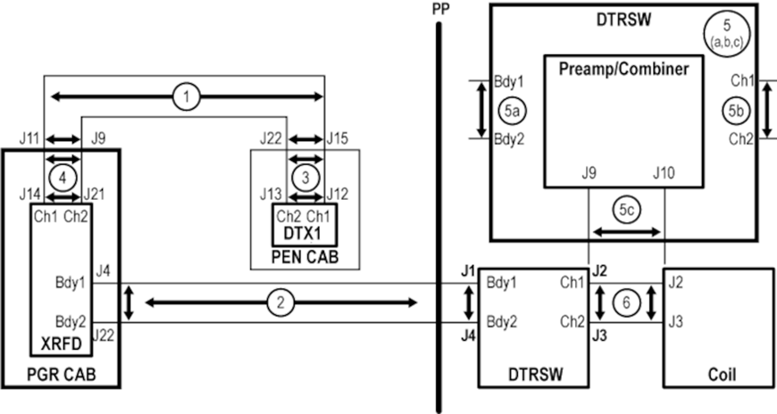
- Starting with action 1, swap both ends of cables as shown to relocate the entire cable onto the other transmit line. (For action 5, swap cables only at the DTRSW.)
For action 2, try the cable ends at the PGR and DTRSW first. If the problem continues, try the cable ends at the pen panel.
- After swapping the cables, repeat quadrature calibration in Test mode for the given action, and record the new initial residual phase value and polarity as result B.
- Compare the values recorded as result A and result B:
- If the polarities are the same, neither of the cables are the cause of phase failure. Return the cables to the normal positions and repeat the steps above with the next numbered action, until you find the problem or all actions are done.
- If the polarities are different and this is action 5, stop and replace the DTRSW because it is the source of most of the additional phase.
- If the polarities are different and result A is positive, then most of the additional phase is in the channel 2 transmit cable that was swapped. Inspect the cable and confirm that it is the correct cable for the system. Reseat the cable.
- If the polarities are different and result A is negative, then most of the additional phase is in the channel 1 transmit cable that was swapped. Inspect the cable and confirm that it is the correct cable for the system. Reseat the cable.
- If the situation remains unchanged, the only items left are the DTX1 exciter and the body coil. Contact support before continuing.
Magnitude troubleshooting
Cable swapping can also be utilized to isolate magnitude issues with dual drive systems. The magnitude change between channels should not vary more than 5 counts when the RF transmit cables are swapped. The following process tests the entire transmit chain from the output of the exciter to the output of the DTRSW. The only cables that are not be tested are the cables that run between the DTRSW and the body coil.
- Using a normal system configuration, perform quadrature calibration in Test mode and record the initial residual magnitude value and polarity as result A.
- Swap cables between exciter outputs at J12 and J13 at the exciter, and swap cables between J1 and J4 at the DTRSW.
Figure 5. Magnitude troubleshooting 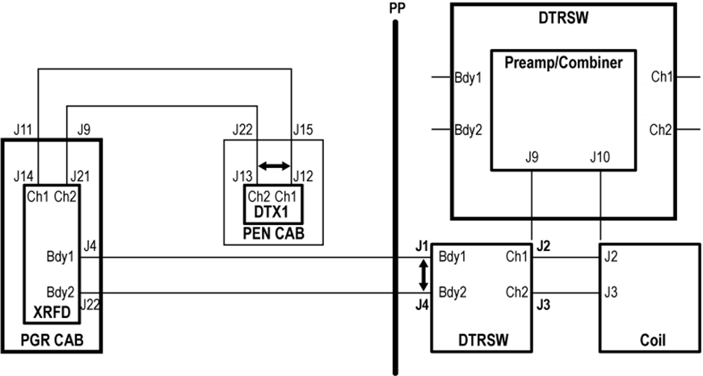
- After swapping the cables, repeat quadrature calibration in Test mode for the given action, and record the new initial residual magnitude value and polarity as result B.
- Compare the results. If there is a 5 count difference between the two magnitude values, the transmit chain is contributing to the magnitude error.
Using RFA tool to troubleshoot DD quadrature calibration failures
The RFA Loopback Test can be used to measure deviations in magnitude and phase for channel 1 and channel 2 anywhere in the transmit chain between the DTX exciter and the DTRSW. It cannot be used to accurately measure magnitude and phase for channel 1 and channel 2 from the RF body coil.
It is recommended that RFA be executed first at the output of the DTRSW. This will determine if an issue is either with the system electronics leading up to the DTRSW or if the issue is with the body coil. If the failure is determined to be before the DTRSW, RFA can be used to isolate the failure location.
| Warning | |
|---|---|
Tools and test equipment
| Tools and test equipment | ||
|---|---|---|
| Item | Quantity | Part Number |
| Power measurement kit | 1 | 5307511 |
| SST kit | 1 | 5110731-4 |
| 70 dB, with 10 dB step, attenuator (from 3.0T Grafidy kit, part 2386042) | 1 | 46-255838P2 |
Determining “Hot” channel
Either channel 1 or channel 2 could be the “hot” channel (that is, the channel with largest gain). First determine which channel is the hot, then use that channel to set the initial value of the attenuators. If you use the wrong channel to set up the attenuators, the values may be over-ranged, causing inaccurate results.
To determine which channel has larger gain, examine the results from the DD Quadrature Calibration tool. The channel with the larger attenuation value reported in the calibration tool is the hot channel.
Based on which channel is hot, follow the correct instructions below (Running RFA: channel 1 first or Running RFA: channel 2 first).
Running RFA: channel 1 first
Complete these steps if you have determined that channel 1 is the hot channel (see Determining “Hot” channel). If channel 2 is the hot channel, refer instead to Running RFA: channel 2 first.
Setup for channel 1
See Setup for channel 2 for information on setting up channel 2.
- Before running RFA, zero out any residual values in the DD Quadrature tool as follows:
- On the Common Service Desktop, select Calibration then select DD Quadrature Calibration.
- Select Reset.
- Select Defaults (0,0).
- Exit the DD Quadrature tool.
- Ensure that the system is idle, and remove all portable coils from the bore.
- Place the body TLT sphere and loader on the table. If you are using a GEM (flat) table, use the foam holder to contain the phantom.
- Landmark the phantom.
-
On the driver module in the PEN cabinet, set switch 2 (SW2) to TR DISABLE and SW3 to DD DISABLE.
Figure 6. Setting TR and DD disable 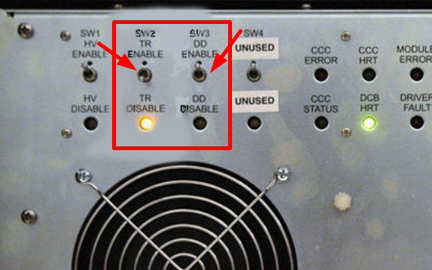
-
On the exciter/ref clock module located in the PEN cabinet, set the RF Enb switch to down (Disable).
Figure 7. Exciter/Ref clock module 
-
To gather data from the first channel, set up the test configuration using the diagram and steps below.
Figure 8. DTRSW troubleshooting for channel 1 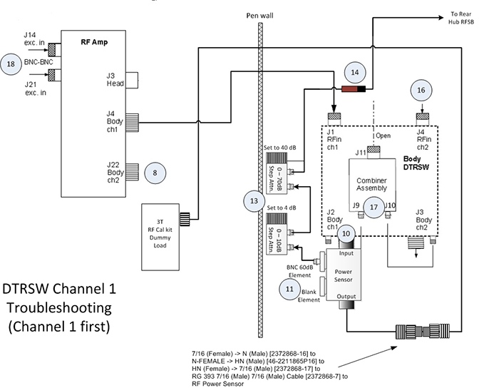
-
Disconnect the Ch2 transmit cable from the RF amplifier at J22. Connect the cable from J22 to the 3.0T 35 kW (50Ω) dummy load.
-
Disconnect J7 and J8 at DTRSW. Leave cables disconnected.
-
Remove Ch1 RF output cable to body coil from the DTRSW at J2. Leave the cable disconnected.
-
Place a 60 dB BNC element, labeled 2372868-22, into the Forward port of the 5010G RF power sensor. Install a metal element blank or any other sense element into the open port labeled Reflected on the power sensor. The Reflected port is not measured, so the type of element used to fill this port is not critical.
-
Connect the power sensor to J2 of the DTRSW.
-
Install two adjustable attenuators in series with the 60 dB element in the RF power sensor. Set up the attenuators. Set the 1 dB step attenuator to 4 dB, and the 10 dB step attenuator to 40 dB. Total additional attenuation provided by the step attenuators should be 44 dB.
-
Remove the body receive cable from the preamp combiner at J11. Connect a DC block at the end of this cable and connect the other end of the DC block to the step attenuator.
-
Disconnect the Ch2 RF transmit to body coil cable at J3 of the DTRSW. Leave the cable disconnected.
-
Remove the Ch2 RF transmit cable at J4 of the DTRSW. Connect this end to the output side of the RF power sensor using the RF cable from the SST kit and the two RF connectors from the RF power measurement kit.
Table 2. Required connectors and cables Part Name Part Number Kit Name RF Connector, 7/16 (Female) -> N (Male) 2372868-16 3.0T RF Power Measurement Kit RF Connector, N-FEMALE -> HN (Male) 46-2211865P16 SST Kit RF Connector, HN (Female) -> 7/16 (Male) 2372868-17 3.0T RF Power Measurement Kit -
Disconnect the input cables to the preamp combiner at J9 and J10.
-
Disconnect J21 cable at the RF amplifier. Leave cable disconnected.
Data Analysis
| Notice | |
|---|---|
-
On the exciter/ref clock module located in the PEN cabinet, set the RF Enb switch to Enable (UP).
-
Insert the service key into the PC.
-
From the Common Service Desktop, select the Image Quality tab, and then select RFA.
-
Set Loopback Mode to Body Dummy, RF Pulse Type to Ascending, Dual Drive Output to Ch1 output only looped back and Disable Ch2 exciter output.
-
For channel 1, set Dual Drive Output to Ch1 output only looped back and Disable Ch2 exciter output.
-
For channel 2, set Dual Drive Output to Ch2 output only looped back and Disable Ch1 exciter output.
Figure 9. RF analysis tool menu 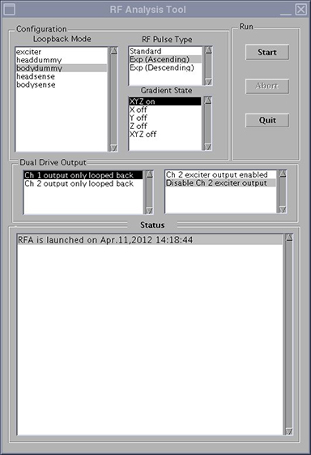
-
-
Click Start.
Note: SVAT errors usually indicate a setup problem such as landmark, 32-channel patient table connector not connected, TR or DD fault, etc. Check the error log. -
Check the loopback setup according to the pop-up request. Click Continue and then click Yes.
-
After 60 seconds, a message box appears. Do NOT respond to the message box at this point. Click the Patient icon in the upper right of the display.
Figure 10. Patient icon 
-
Slowly increase TG to 160 while adjusting the rotary attenuators (to prevent receiver over-range indicated by R1%>100 or R2% >100) until you achieve an R1% and R2% display on the manual prescan page of 84-94% with TG=160.
When using RFA to troubleshoot Dual Drive Quadrature Calibration issues, the transmit gain (TG) should be set to 160 for both channels because this is the nominal prescan value.
Do NOT change the attenuator settings for channel 2. The attenuator settings must be the same for both channels.
-
When done, click the Toolbelt icon to return to service window. Start the scan by selecting Proceed & auto-scan.
Figure 11. Message box 
-
After the scan and analysis ends, view the results. Compare the results to the typical normal plots shown in Figure 12.
Real failures exceed the example plot values by 2 or more times. Minor differences are not failures. Select the popup choice to erase the displays. The plots are saved as JPG files under /usr/g/service/cclass/RFA/.
Figure 12. Sample RFA plot results 
-
From the RFA Intra-Pulse Phase Linearity Plot Analysis 1, record the Topavg (magnitude) value and the Avg Phase deg (Phase) values for channel 1. You may need to resize to view values. Use Table 4 to record these values.
Note:If the plots are closed, they can be reopened. Go to directory /usr/g/service/cclass/RFA and open file with the suffix phafit.jpg.
For example: display P28160.7.RFA.bodydummy.2.phafit.jpg
Setup for channel 2
-
On the exciter/ref clock module located in the PEN cabinet, set the RF Enb switch down (Disable).
-
To gather data from channel 2, set up the test configuration using the diagram and steps in the following illustration.
Figure 13. DTRSW Troubleshooting for channel 2 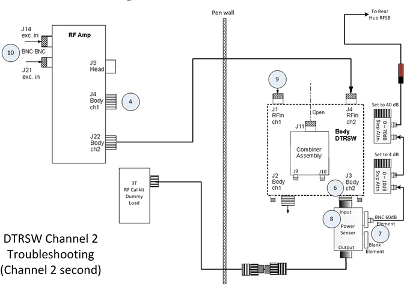
-
Reconnect Ch2 transmit cable at RF amplifier (J22).
-
Disconnect Ch1 transmit cable from the RF amplifier at J4. Connect the cable removed from J4 to the 3.0T 35 kW (50Ω) dummy load.
-
Remove the Ch2 RF output cable to body coil from the DTRSW at J3. Leave the cable disconnected.
-
Move the RF power sensor input (currently connected to J2) to J3.
-
Leave variable attenuators set in the same values as channel 1.
-
Remove the body receive cable from the preamp combiner at J11. Connect a DC block at the end of this cable and connect the other end of the DC block to the step attenuator.
-
Remove the Ch1 RF transmit cable at J1 of the DTRSW. Connect this end of the cable to the output side of the RF power sensor using the RF cable from the SST kit and several RF connectors from the RF power measurement kit.
- Disconnect J14 at the input of the RF amp.
-
On the exciter/ref clock module, set the RF Enb switch to up (Enable).
-
Repeat the steps in Data Analysis, changing the following on the RFA Analysis Tool (Figure 9):
-
Set Loopback Mode to Body Dummy
-
Set RF Pulse Type to Ascending
-
Set Dual Drive Output to Ch2 output only looped back and Disable Ch1 exciter output
-
-
After the scan is complete, reconnect J14 at the RF amplifier.
-
From the RFA Intra-Pulse Phase Linearity Plot Analysis 1, record the Topavg (or magnitude) value and the Avg Phase deg (or Phase) values for channel 2. You may need to resize to view values. Use Table 4 to record these values.
Note:If the plots are closed, they can be reopened from the JPG files where they are stored. Go to directory /usr/g/service/cclass/RFA and open the file with the suffix phafit.jpg.
For example: display P28160.7.RFA.bodydummy.2.phafit.jpg.
Running RFA: channel 2 first
Complete these steps if channel 2 is the hot channel (see Determining “Hot” channel). If channel 1 is the hot channel, refer instead to Running RFA: channel 1 first.
Setup for channel 2
-
Before running RFA, zero out any residual values in the DD Quadrature tool as follows:
-
On the Common Service Desktop, select Calibration then select DD Quadrature Calibration.
-
Select Reset.
-
Select Defaults (0,0).
-
Exit the DD Quadrature tool.
-
-
Ensure that the system is idle, and remove all portable coils from the bore.
-
Place the body TLT sphere and loader on the table. If you are using a GEM (flat) table, use the foam holder to contain the phantom.
-
Landmark the phantom.
-
On the driver module in the PEN cabinet, set switch 2 (SW2) to TR DISABLE and SW3 to DD DISABLE.
Figure 14. Setting TR and DD disable -
On the exciter/ref clock module located in the PEN cabinet, set the RF Enb switch down (Disable).
-
To gather data from channel 2, set up the test configuration using the diagram and steps in the following illustration.
Figure 15. DTRSW troubleshooting to channel 2 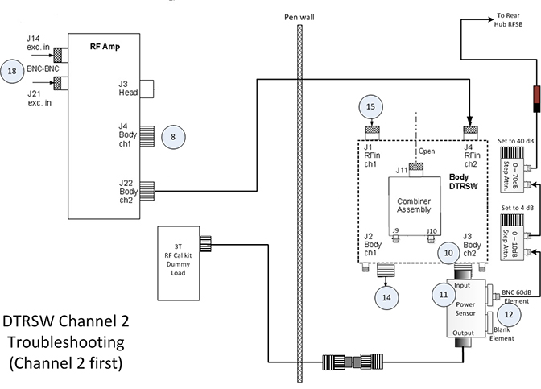
-
Disconnect Ch1 transmit cable from the RF amplifier at J4. Connect the cable removed from J4 to the 3.0T 35 kW (50Ω) dummy load.
-
Disconnect J7 and J8 at DTRSW. Leave cables disconnected.
-
Remove the Ch2 RF output cable to body coil from the DTRSW at J3. Leave the cable disconnected.
-
Place a 60 dB BNC element, labeled 2372868-22, into the Forward port of the 5010G RF power sensor. Install a metal element blank or any other sense element into the open port labeled Reflected on the power sensor. The Reflected port is not measured, so the type of element used to fill this port is not critical.
-
Connect the power sensor to J3 of the DTRSW.
-
Install two adjustable attenuators in series with the 60 dB element in the RF power sensor. Set up the attenuators. Set the 1 dB step attenuator to 4 dB, and the 10 dB step attenuator to 40 dB. Total additional attenuation provided by the step attenuators should be 44 dB.
-
Remove the body receive cable from the preamp combiner at J11. Connect a DC block at the end of this cable and connect the other end of the DC block to the step attenuator.
-
Disconnect the Ch1 RF transmit to body coil cable at J2 of the DTRSW. Leave the cable disconnected.
-
Disconnect the Ch1 RF transmit cable at J1 of the DTRSW. Connect this end of the cable to the output side of the RF power sensor using the RF cable from the SST kit and several RF connectors from the RF power measurement kit.
Table 3. Required connectors and cables Part Name Part Number Kit Name RF Connector, 7/16 (Female) -> N (Male) 2372868-16 3.0T RF Power Measurement Kit RF Connector, N-FEMALE -> HN (Male) 46-2211865P16 SST Kit RF Connector, HN (Female) -> 7/16 (Male) 2372868-17 3.0T RF Power Measurement Kit -
Disconnect the input cables to the preamp combiner at J9 and J10.
-
Disconnect J21 cable at the RF amplifier. Leave cable disconnected.
Data analysis
| Notice | |
|---|---|
- On the exciter/ref clock module located in the PEN cabinet, set the RF Enb switch to Enable (UP).
- Insert the service key into the PC.
- From the Common Service Desktop, select the Image Quality tab, and then select RFA.
- Set Loopback Mode to Body Dummy, RF Pulse Type to Ascending, Dual Drive Output to Ch1 output only looped back and Disable Ch2 exciter output.
- For channel 1, set Dual Drive Output to Ch1 output only looped back and Disable Ch2 exciter output.
- For channel 2, set Dual Drive Output to Ch2 output only looped back and Disable Ch1 exciter output.
- Click Start.Note:
SVAT errors usually indicate a setup problem such as landmark, 32-channel patient table connector not connected, TR or DD fault, etc. Check the error log.
- Check the loopback setup according to the pop-up request. Click Continue and then click Yes.
- After 60 seconds, a message box appears. Do NOT respond to the message box at this point. Click the Patient icon in the upper right of the display.
Figure 16. Patient icon - Slowly increase TG to 160 while adjusting the rotary attenuators (to prevent receiver over-range indicated by R1%>100 or R2% >100) until you achieve an R1% and R2% display on the manual prescan page of 84-94% with TG=160.
When using RFA to troubleshoot Dual Drive Quadrature Calibration issues, the transmit gain (TG) should be set to 160 for both channels because this is the nominal prescan value.
Do NOT change the attenuator settings for channel 2. The attenuator settings must be the same for both channels.
- When done, click the Toolbelt icon to return to service window. Start the scan by selecting Proceed & auto-scan.
Figure 17. Message box - After the scan and analysis ends, view the results. Compare the results to the sample normal plots shown in Figure 18.
Real failures exceed the example plot values by 2 or more times. Minor differences are not failures. Select the popup choice to erase the displays. The plots are saved as JPG files under /usr/g/service/cclass/RFA/.
Figure 18. Sample RFA plot results - From the RFA Intra-Pulse Phase Linearity Plot Analysis 1, record the Topavg (magnitude) value and the Avg Phase deg (Phase) values for channel 1. You may need to re-size to view values. Use Table 4 to record these values.Note:
If the plots are closed, they can be reopened. Go to directory /usr/g/service/cclass/RFA and open file with the suffix phafit.jpg.
For example: display P28160.7.RFA.bodydummy.2.phafit.jpg.
Setup for channel 1
- On the exciter/ref clock module located in the PEN cabinet, set the RF Enb switch to down (Disable).
Figure 19. Exciter/Ref clock module - To gather data from the first channel, set up the test configuration using the diagram and steps below.
Figure 20. DTRSW troubleshooting for channel 1 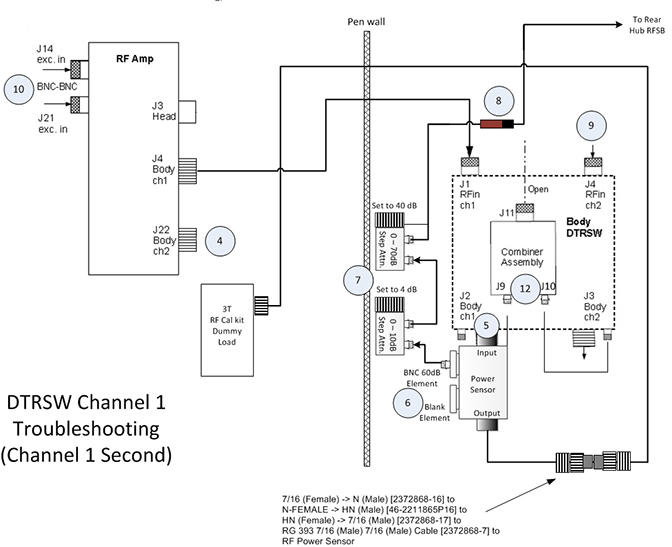
- Reconnect the Ch1 transmit cable at the RF amplifier (J4).
- Disconnect the Ch2 transmit cable from the RF amplifier at J22. Connect the cable from J22 to the 3.0T 35 kW (50Ω) dummy load.
- Remove the Ch1 RF output to body coil cable from the DTRSW at J2. Leave the cable disconnected.
- Move the RF power sensor input (currently connected to J3) to J2.
- Leave the variable attenuators set to the same values as channel 2.
- Remove the body receive cable from the preamp combiner at J11. Connect a DC block at the end of this cable and connect the other end of the DC block to the step attenuator.
- Remove the Ch2 RF transmit cable at J4 of the DTRSW. Connect this end to the output side of the RF power sensor using the RF cable from the SST kit and the two RF connectors from the RF power measurement kit.
- Disconnect J21 at the input of the RF amp.
- On the exciter/ref clock module, set the RF Enb switch to up (Enable).
- Repeat the steps in Data analysis, changing the following on the RFA Analysis Tool:
- Set Loopback Mode to bodydummy
- Set RF Pulse Type to Exp (Ascending)
- Set Dual Drive Output to Ch1 output only looped back and Disable Ch2 exciter output
Figure 21. RF analysis tool menu - After the scan is complete, reconnect J21 at the RF Amplifier.
- From the RFA Intra-Pulse Phase Linearity Plot Analysis 1, record the Topavg (or magnitude) value and the Avg Phase deg (or Phase) values for channel 1. You may need to resize to view valves. Use Table 4 to record these values.Note:
If the plots are closed, they can be reopened from the JPG files where they are stored. Go to directory /usr/g/service/cclass/RFA and open the file with the suffix phafit.jpg.
For example: display P28160.7.RFA.bodydummy.2.phafit.jpg
Calculating dB difference
| Channel 1 | Channel 2 | |
| Topavg | ||
| Avg Phase deg |
- Calculate the dB difference using the following formula:
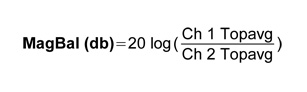
If the MagBal delta is greater than 0.5 dB (either positive or negative), there could be an issue with the system electronics. Check RF output. It is also recommended to run RFA at the output of the RF amplifier and the exciter to isolate cause of high MagBal.
However, if the MagBal delta is less than 0.5 dB, there could be an issue with the body coil tuning.
Note:If the plots are closed, they can be reopened from JPG files where they are stored. Go to directory /usr/g/service/cclass/RFA and open the file with the suffix phafit.jpg.
For example: display P28160.7.RFA.bodydummy.2.phafit.jpg
Note: When setting the variable attenuators for this test, do not change the settings. Channel 1 and channel 2 must be set at the same attenuation values for this test.If the phase difference between channel 1 and channel 2 is greater than 90 degrees, ±15 degrees (or 75 to 105 degrees), there could be an issue with the system electronics. It is recommended to run RFA at the output of the RF amplifier and the exciter to isolate the cause of the phase issue.
In the RFA results, channel 1 should lead channel 2. The phase of channel 1 should be +90 degrees relative to the phase of channel 2.
For example, if the phase for channel 1 is 110.0 degrees and the phase for channel 2 is -160.0 degrees, the actual phase difference is 90 degrees.Figure 22. Polar chart 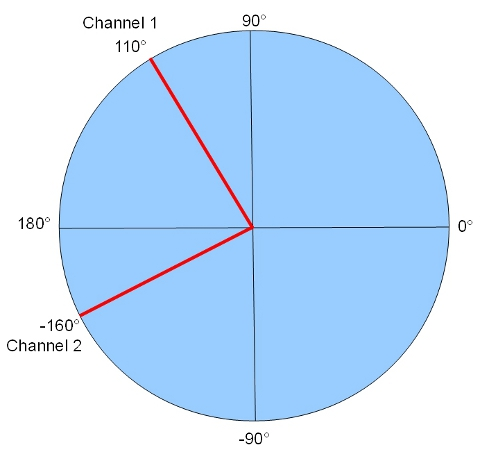
- If both the magnitude and phase results for the DTRSW output are acceptable, the problem is possibly in part of RF chain that is not included in RFA test loop, such as the RF body coil.
Finalization for RFA check
- Return the system to the normal operating configuration.